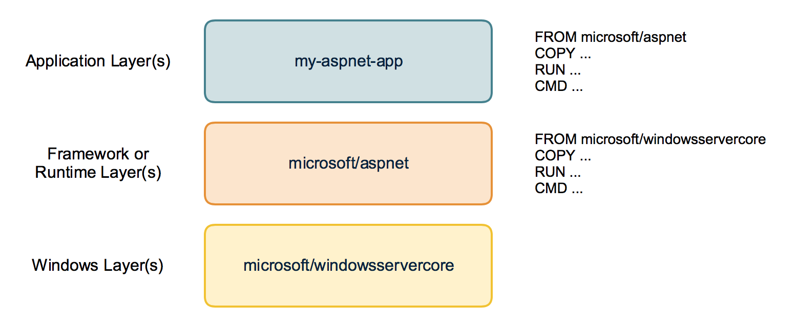
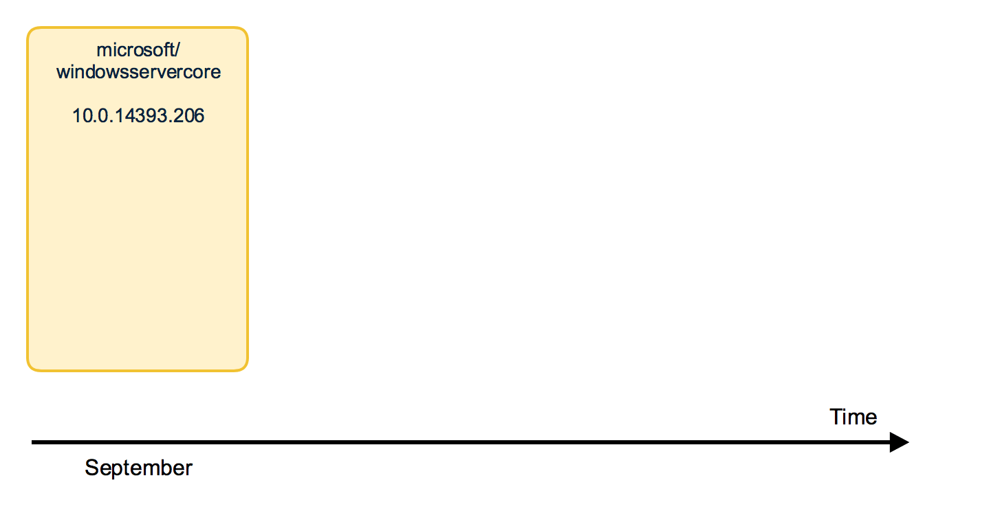
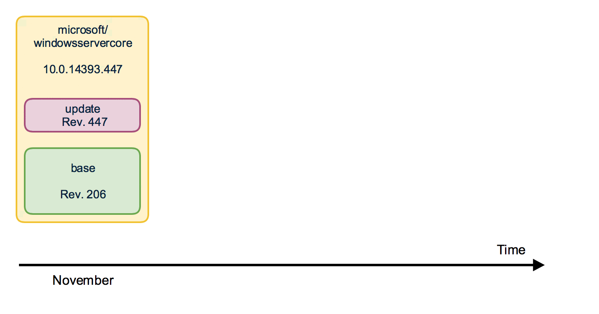

Last year in October Microsoft has released Windows Server 2016 and with it the official support for Windows Containers. If you have tried Windows Containers already and built some Windows Container images you may wonder how to implement an update strategy.
How can I install Windows Updates in my container image?
Working with containers is not the same as working with real servers or VM's you support for months or years. A container image is a static snapshot of the filesystem (and Windows registry and so on) at a given time.
You won't enter a running container and run the Windows Update there. But how should we do it then?
Container images have layers
First have a look how a container image looks like. It is not just a snapshot. A container image consist of multiple layers. When you look at your Dockerfile you normally use a line like FROM microsoft/windowsservercore.
Your container image then uses the Windows base image that contains a layer with all the files needed to run Windows containers.
If you have some higher level application you may use other prebuilt container images like FROM microsoft/iis or FROM microsoft/aspnet. These images also re-use the FROM microsoft/windowsservercore as base image.

On top of that you build your own application image with your code and content needed to run the application in a self contained Windows container.
Behind the scenes your application image now uses several layers that will be downloaded from the Docker Hub or any other container registry. Same layers can be re-used for different other images. If you build multiple ASP.NET appliations as Docker images they will re-use the same layers below.
But now back to our first question: How to apply Windows Updates in a container image?
The Windows base images
Let's have a closer look at the Windows base images. Microsoft provides two base images: windowsservercore and nanoserver. Both base images are updated on a regular basis to roll out all security fixes and bug fixes. You might know that the base image for windowsservercore is about 4 to 5 GByte to download.
So do we have to download the whole base image each time for each update?
If we look closer how the base images are built we see that they contain two layers: One big base layer that will be used for a longer period of time. And there is a smaller update layer that contains only the patched and updated files for the new release.

So updating to a newer Windows base image version isn't painful as only the update layer must be pulled from the Docker Hub.
But in the long term it does not make sense to stick forever to the old base layer. Security scanners will mark them as vulnerable and also all the images that are built from them. And the update layer will increase in size for each new release. So from time to time there is a "breaking" change that replaces the base layer and a new base layer will be used for upcoming releases. We have seen that with the latest release in December.

From time to time you will have to download the big new base layer which is about 4 GByte for windowsservercore (and only about 240 MByte for nanoserver, so try to use nanoserver whereever you can) when you want to use the latest Windows image release.
Keep or update?
Should I avoid updating the Windows image to revision 576 to keep my downloads small? No!
My recommendation is to update all your Windows container images and rebuild them with the newest Windows image. You have to download that bigger base layer also only once and all your container images will re-use it.
Perhaps your application code also has some updates you want to ship. It's a good time to ship it on top of the newest Windows base image. So I recommend to run
docker pull microsoft/windowsservercore
docker pull microsoft/nanoserver
before you build new Windows container images to have the latest OS base image with all security fixes and bug fixes in it.
If you want to keep track which version of the Windows image you use, you can use the tags provided for each release.
Instead of using only the latest version in your Dockerfile
FROM microsoft/windowsservercore
you can append the tag
FROM microsoft/windowsservercore:10.0.14393.576
But I still recommend to update the tag after a new Windows image has been published.
You can find the tags for windowsservercore and nanoserver on the Docker Hub.
What about the framework images?
Typically you build your application on top of some kind of framework like ASP.NET, IIS or a runtime language like Node.js, Python and so on. You should have a look at the update cycles of these framework images. The maintainers have to rebuild the framework images after a new release of the Windows base image came out.
If you see some of your framework images lag behind, encourage the maintainer to update the Windows base image and to rebuild the framework image.
With such updated framework images - they hopefully come with a new version tag - you can rebuild your application.
TL/DR
So your part to get Windows Updates into your Windows Container images is to choose the newer image in your Dockerfile and rebuild your application image with it.
If you haven't used version tags of the image below, do a docker pull ... of that image to get sure to have the updated one before you rebuild.
As always, please leave a comment if you have questions or improvements or want to share your thoughts. You can follow me on Twitter @stefscherer.